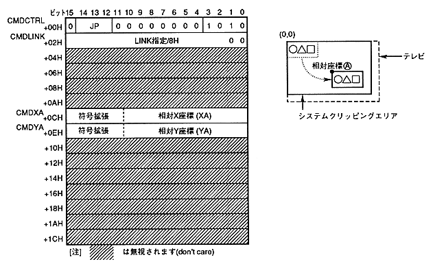

The relative coordinate setting command uses the coordinates specified by the drawing command as the relative coordinate value, and adds the value specified by the relative coordinate command as the drawing coordinate.
∙ Relative coordinate setting command when the command selection bit is 1010B.
The contents of the command table are as follows.

The relative coordinate setting command is defined as follows.
- If the end bit is set to 0B and the command selection bit is set to 1010B, it becomes a relative coordinate setting command.
- Specify the jump format. When the jump format is assign or call, divide the address of the command table to be processed next by 8H and set to CMDLINK.
- The relative coordinates are defined in CMDXA, CMDYA.